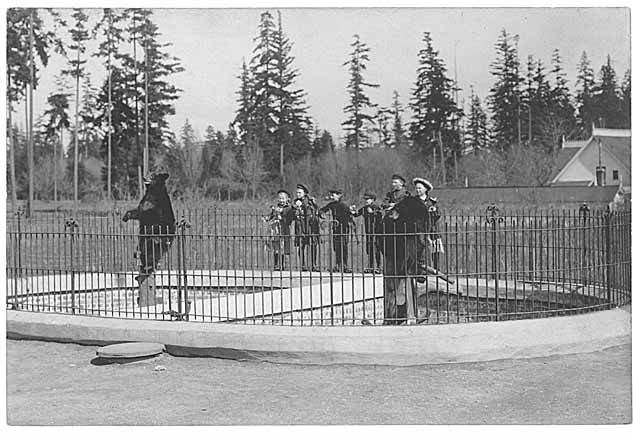

Chapter 18
The First Cables to Washington
The morning light fell across the market sheds at Queenstown and made a ledger of the dead. Women, children, men, laid in rows on the stone floors, their names pencilled onto tags or written on slips of paper pinned to their clothing. Some had no names at all. The light made the scene a document. What it documented was not yet news, not yet a diplomatic note, not yet a headline. On 8 May 1915, it was still a local fact: a thing that had happened off the Old Head of Kinsale the afternoon before, when the Cunard liner RMS Lusitania, torpedoed by the German submarine U-20, went down in eighteen minutes with more than twelve hundred souls aboard. The sheds held the evidence. The world had not yet received it.
Two things happened at almost the same hour on that morning, separated by an ocean and by the entire apparatus of how a modern state learns of catastrophe. In Queenstown, a Reuters correspondent stood in the telegraph office composing a bulletin from the fragments survivors had given him. In Washington, a clerk in the State Department placed a file on the desk of Secretary of State William Jennings Bryan. The file contained a cable from Ambassador Walter Hines Page in London. Brief, cautious, it asked for instructions.
Between these two documents, the wire-service bulletin racing toward the presses and the diplomatic cable resting on a desk, the Lusitania ceased to be a ship. It became a story. In the span of forty-eight hours, it became two stories, each pulling in a different direction, each with a different engine of authority, each carrying the same dead but dressing them in different meanings.
The Reuters man in Queenstown worked fast because the telegraph wire demanded speed and because the stories pouring off the rescue boats were already organizing themselves into a shape. Survivors spoke of a single torpedo, then of a second explosion. They spoke of boats that could not be lowered, of the ship listing so sharply that lifeboats on the port side swung inward and struck the hull. They spoke of the captain on the bridge, of the water cold enough to kill within minutes. The correspondent compressed these accounts into the language the wire service required. His bulletin carried the compression of trauma into print.
The first reports were necessarily wrong in their particulars, as first reports always are. The death toll was uncertain. The number of American passengers aboard was uncertain. Whether the ship had been warned, whether she had been armed, whether the German submarine had surfaced first — all of this was unknown. What the correspondent could establish was the frame: a passenger liner had been torpedoed without warning, hundreds were feared drowned, and among the dead were women and children. That frame was enough. It carried across the wire and into the London offices of the press agencies, and from there it crossed the Atlantic again, arriving in New York and Washington within hours.
The cable from Ambassador Page arrived in Washington by a different route and in a different register. Page had received his own fragmentary information from the Foreign Office and from the Admiralty, which was itself still assembling the picture from Vice-Admiral Coke’s reports out of Queenstown. Coke’s first cables had been factual, procedural, and incomplete — the kind of communication that an admiral sends when he is still counting his ships and his dead. Page distilled what he had received into a note to Bryan. The tone was measured. The questions were practical. What had happened was clear in outline; what it meant for American interests was not.
Page’s cable did not use the word atrocity. It did not characterize the German action. It reported what was known and asked what was not. The instrument of diplomacy was designed to establish a record, preserve options, and avoid committing the United States government to a position before the facts were secure. A cable sent from Grosvenor Gardens to the State Department would become part of a chain of correspondence that might end in a diplomatic note to Berlin, might end in a rupture of relations, might end in war. Page wrote carefully because the consequences of writing carelessly were enormous.
The two documents crossed the Atlantic in opposite directions, the press bulletin moving westward toward the American public, the diplomatic cable moving westward toward the American government, and they arrived in Washington within hours of each other. They told the same story. They did not tell it the same way.
The German embassy’s warning, printed in the leading journals of the United States on 1 May, the day the Lusitania was scheduled to sail from New York, had already established the terms on which the sinking would be received. The advertisement, placed alongside Cunard’s own sailing notices, warned Americans that a state of war existed in the waters around the British Isles and that travelers sailing in the war zone on ships of Great Britain or her allies did so at their own risk.
The war zone had been declared by Germany on 18 February 1915. The warning was specific, public, and, in its way, a legal document — a notice of hazard intended to shift responsibility from the attacker to the traveler. The German government would argue, in the days and weeks to come, that the warning constituted adequate notice, that the Lusitania had entered a declared zone of operations, and that any American who boarded her had been informed of the risk.
This argument had been prepared before the torpedo struck. It was not an afterthought. The position had been set in type and distributed to American newspapers while the Lusitania was still moored at her pier in New York, taking on passengers and cargo. The warning was the first move in a legal argument that would unfold over the following months. The torpedo was the second.
By the morning of 8 May, the press on both sides of the Atlantic had taken possession of the story in a way that the diplomatic cables could not match. The Times of London led with the sinking. The New York papers — the Times, the World, the Herald, the Sun — carried headlines that did not hesitate. The language was immediate and absolute. The sinking was described as an atrocity, as murder, as the deliberate killing of noncombatants. The German embassy’s warning was cited as evidence not of fair notice but of premeditation. The fact that women and children were among the dead was placed at the center of the narrative. The fact that Americans were among the dead was placed at the center of the American narrative.
The headlines did what headlines do: they compressed complexity into certainty. They did not ask whether the Lusitania had been carrying contraband. They did not ask whether the Admiralty had failed to provide an escort. They did not ask whether Captain Turner had received and understood the Admiralty’s warnings about submarine activity off the Irish coast. These questions went unasked because the press operated on a different timeline than diplomacy and under different imperatives. The press had to make sense of the event for readers who were learning of it for the first time and who demanded moral clarity, not procedural caution. The press provided that clarity by assigning responsibility to Germany, immediately and without qualification.
This was not, in the narrowest sense, wrong. A German submarine had torpedoed a passenger liner without warning. Kapitänleutnant Walther Schwieger, in command of U-20, had submerged and fired upon the vessel from approximately seven hundred meters to starboard. The torpedo had struck. The ship had gone down in eighteen minutes. More than twelve hundred people had died. These facts were not in dispute. The moral judgment that followed from them, that the act was an atrocity, was available to anyone who read the facts and applied the standards that the civilized world had, before 1914, generally accepted regarding the protection of noncombatants at sea.
But the headlines did something else, something that the diplomatic cables were designed not to do. They foreclosed the possibility of complexity. The sinking became a simple story, German barbarism against civilian innocence, and in doing so they narrowed the space in which the American government could maneuver. The press story was a demand. Outrage was its currency. Action was its requirement. The United States government must respond to the killing of American citizens with something more than a diplomatic note.
The diplomatic record moved more slowly, and through different hands. Page’s first cable to Bryan on 8 May was followed by additional cables over the next forty-eight hours, each adding detail, each refining the picture. Page reported the numbers he had been given — the dead, the survivors, the Americans known to be aboard. He reported the statements of the British government, which had condemned the sinking in immediate and unambiguous terms. He reported the statements of the German government, which had not yet been issued but which were anticipated. In these first cables, he did not offer policy advice. He reported.
Bryan, receiving these cables, faced a problem that was both diplomatic and political. The press was demanding a response. The public was demanding a response. Members of Congress were demanding a response. And the cable on his desk, the one from Page, was asking him what response he wished to make. Bryan’s instincts ran toward restraint. The United States, he believed, should seek to mediate the larger conflict rather than inflame it. The British blockade of Germany, which had interdicted foodstuffs and other nonmilitary goods, was itself a violation of international law that had provoked the German submarine campaign. A compromise was possible: the British could be persuaded to relax their blockade and the Germans could be persuaded to abandon unrestricted submarine warfare. This was not a view that commanded much support in the press or in the public mood that the press had helped to create.
The tension between Bryan’s caution and the press’s outrage was a tension between two modes of responding to catastrophe. The diplomatic mode sought to preserve agency, to keep the United States free to choose its course, to investigate, to negotiate, to avoid commitments that could not be withdrawn. The public mode sought to close down agency, to fix the meaning of the event, to assign blame, to force a response that matched the magnitude of the loss. Both modes were doing what they were designed to do. The conflict between them was structural.
The German government’s first public response to the sinking came on 10 May, in a statement issued by the Foreign Office in Berlin. The statement, drafted under the direction of State Secretary Gottlieb von Jagow, did not apologize. It did not express regret for the loss of civilian life. It argued that the Lusitania had been a legitimate military target. Von Jagow alleged that the Lusitania had been armed — that she carried guns and had been ordered to ram submarines, in contravention of the Cruiser Rules that governed the engagement of merchant vessels. He further alleged that the Lusitania had carried munitions and Allied troops on previous voyages. Grand Admiral Alfred von Tirpitz stated that it was sad that many Americans, in what he called wanton recklessness, had chosen to travel on a British ship into a declared war zone despite the embassy’s warning.
The German statement arrived in Washington on 10 May, two days after the first cables from Page. A press environment that had already hardened the story into a narrative of German guilt received it. A diplomatic environment in which Bryan was still receiving cables from London and still trying to assemble a factual record also received it. And it arrived as a provocation — a document that seemed to confirm what the press had been saying, that Germany did not regard the killing of civilians as an act requiring apology or explanation.
The German argument was not, in its legal structure, frivolous. The war zone had been declared. The warning had been published. The Lusitania was a British ship flying a British flag, owned by a British company, sailing into waters where Germany had announced that it would conduct unrestricted submarine warfare. Under the strict logic of the German position, any passenger who boarded the Lusitania after 1 May had been warned and had assumed the risk. This was a legal argument. It was not a political argument. It could not survive contact with the image of dead women and children laid out in the sheds at Queenstown.
What happened in the forty-eight hours between 8 and 10 May was the construction of two narratives that would compete for the rest of the diplomatic crisis and, in important ways, for the rest of the war. The first narrative was the diplomatic record — the cables between Page and Bryan, the memoranda within the State Department, the inquiries about the ship’s cargo, the questions about the Admiralty’s conduct.
This narrative was careful, procedural, and oriented toward establishing a legal and factual basis for whatever action the United States might take. It moved at the speed of diplomacy, which is slow. It asked questions that the press did not ask and that the public did not want asked. Had the ship been carrying contraband? Had the Admiralty failed to provide an escort? What had caused the second explosion, the one that followed the torpedo, the one that survivors described but that no one could yet explain?
The second narrative was the public story — the headlines, the editorials, the photographs of survivors, the lists of the dead, the biographical sketches of prominent passengers lost. This narrative was immediate, moral, and oriented toward action. It moved at the speed of news, which is fast. It did not ask questions. It provided answers. Germany had committed an act of barbarism against civilization itself, and the United States must respond.
These two narratives were not independent. They fed each other. The press drew its facts from the same cables and bulletins that the diplomats used, but it stripped them of their caution and amplified their emotional charge. The diplomats, in turn, could not ignore the press. Bryan read the newspapers. Page read the newspapers. President Wilson read the newspapers. The public mood that the press had helped to create was a political fact — a thing that the government had to reckon with, not merely a distortion to be corrected. When Wilson drafted his first notes to Berlin in the days following the sinking, he did so in an environment where the press had already established the terms of the debate.
The President himself occupied an ambiguous position in this landscape. Woodrow Wilson had been informed of the sinking on the evening of 7 May, while Page’s first cables were still crossing the Atlantic. His initial response, as recorded by those around him, was one of controlled shock. He said little in public on 8 May. He received the cables from Page. He read the newspapers. He met with Bryan and with his adviser, Edward M. House. The question before him was not whether the sinking was an outrage — he appears to have believed that it was — but what form the American response should take and how far it should go.
The options available to Wilson were constrained by the same tension that constrained Bryan. A strong diplomatic note to Berlin risked provoking a rupture that could lead to war. A weak note risked appearing to accept the German justification and would inflame the public and the press. The middle ground — a firm demand that Germany disavow the act and abandon unrestricted submarine warfare, coupled with a refusal to accept the German argument about the Lusitania’s character — was the ground that Wilson would eventually occupy. But on 8 and 9 May, that ground had not yet been found. The cables were still arriving. The press was still publishing. The German statement had not yet been issued. The President was, in those first forty-eight hours, a man standing between two narratives that had not yet finished forming.
The German government’s warning, published on 1 May in American newspapers alongside the Cunard sailing notices, had been a document designed to do legal work. Its purpose was to establish that passengers boarding the Lusitania had been notified of the risk and had chosen to accept it. The warning was, in this sense, a contract — or an attempt to construct one. The German Foreign Office’s statement of 10 May was the enforcement of that contract. We warned you. You chose to sail. The consequences are yours.
This argument had a certain internal logic. It also had a fatal weakness, one that the press identified immediately and that the diplomatic record would eventually confirm. The warning had been addressed to passengers. It had not been addressed to the government of the United States. It had not been a diplomatic communication between sovereign states. It was a public notice, placed in newspapers, intended to operate on the decisions of individuals. The German government had not communicated to Washington, through diplomatic channels, that the Lusitania specifically would be attacked. It had not identified the ship. It had not offered to guarantee the safety of American passengers if they were removed from the vessel. It had simply warned travelers that the waters around the British Isles were dangerous and that they sailed at their own risk.
The press treated this as premeditation. The diplomatic record treated it as relevant but not dispositive. The distinction mattered. If the warning constituted adequate legal notice, then the German position had merit, however morally repugnant. If it did not, if a general warning about a war zone was insufficient to justify the torpedoing of a passenger liner without further investigation or warning, then the German action was illegal under international law, regardless of the ship’s character or cargo. This was the legal question that the diplomatic cables were designed to pose and that the press had no interest in posing.
The question of the Lusitania’s cargo was, in these first forty-eight hours, already present but not yet central. Page’s cables mentioned it. Bryan’s office received inquiries about it. The German statement alleged that the ship had carried munitions. The Cunard Line denied it. The truth — that the Lusitania was carrying a cargo that included 4, 200 cases of rifle cartridges — was not yet publicly established. It would emerge in the weeks to come, at the Mersey inquiry and in the correspondence between the State Department and the British government. On 8 and 9 May, the cargo question was a footnote. The press did not pursue it. The diplomats noted it and moved on. The story, for the moment, was about the dead.
The dead were the irreducible fact. The rows in the market sheds at Queenstown, the bodies recovered from the water, the lists of the missing — these were the evidence that no argument could erase. The German statement could argue legality. The press could argue morality. The diplomats could argue procedure. But the dead were there, in the sheds and on the lists, and their presence transformed the sinking from a naval engagement into something that neither the legal framework nor the diplomatic protocol had been designed to contain.
The number that would eventually be fixed, 1, 199 dead, including 128 Americans, was not yet established on 8 May. The first cables from Page carried estimates. The press carried higher estimates. The confusion was natural. The passenger list had not been fully reconciled with the survivor lists. Some of those reported missing had been picked up by vessels that had not yet returned to port. Some of those reported saved had died in the hospitals at Queenstown. The number would be refined over the coming days. But the order of magnitude was clear from the first reports: this was not a minor incident. This was a catastrophe that had killed more than a thousand people, including women and children, including American citizens, on a ship that had been the pride of the British merchant marine and a symbol of the transatlantic passage.
The Lusitania was, in the forty-eight hours between 8 and 10 May, transformed. It was transformed from a ship into a case file in the State Department, from a vessel into an atrocity in the press, from a physical object that had sunk off the Old Head of Kinsale into a political fact that would shape the relationship between the United States and Germany for the next two years. The transformation was not instantaneous. It was not singular. It was the product of two parallel processes, the diplomatic and the journalistic, each operating according to its own logic, each producing a version of the event that served its own purposes.
The diplomatic version was a record of questions. What was the ship carrying? Was she armed? Had the Admiralty provided an escort? Had Captain Turner received and understood the Admiralty’s warnings? What was the German government’s position? What response did the United States wish to make? These questions were not rhetorical. They were operational, designed to produce information on which policy could be based. They moved through cables, through memoranda, through meetings in the State Department and in the White House. They moved at the speed of government, which is slower than the speed of news but more durable.
The journalistic version was a record of answers. Germany attacked. Civilians died. Americans were among the dead. The act was barbaric. The government must act. These answers were not contingent. They were not hedged. They did not wait for the cargo manifests or the Admiralty’s records or the German government’s explanation. They were available immediately because they followed from the facts that were immediately known, and because they answered the question that the public was asking, which was not “what happened?” but “what does this mean?”
The gap between these two versions was the space in which the political crisis would unfold. The diplomatic record would eventually produce the notes that Wilson sent to Berlin — firm, measured, demanding that Germany abandon unrestricted submarine warfare and affirming the right of Americans to travel on the high seas without being torpedoed. The public story would produce the pressure that made those notes necessary and that limited the administration’s freedom to compromise. Bryan, who wanted compromise, would find himself increasingly isolated. Wilson, who wanted to be firm but not to go to war, would find the middle ground narrowing. The Germans, who believed their legal position was sound, would find that legal positions do not survive moral verdicts.
The first cables to Washington were, in retrospect, the opening move in a process that would culminate in the American declaration of war against Germany in April 1917. That outcome was not foreordained. It was not even foreseen. The cables themselves did not point toward war. They pointed toward inquiry, toward negotiation, toward the careful establishment of a factual and legal record. The press did not point toward war either, not explicitly, not in the first forty-eight hours. It pointed toward outrage, which is a different thing. Outrage can lead to war. It can also lead to diplomatic pressure, to negotiation, to a settlement. Which path it would take depended on decisions that had not yet been made and on information that had not yet been assembled.

What was established, in those forty-eight hours, was the frame. The Lusitania was now two things at once. It was a diplomatic case — a matter of cables and memoranda and legal arguments about contraband and warnings and the laws of naval warfare. And it was a public atrocity — a matter of headlines and photographs and the bodies in the sheds at Queenstown. These two versions of the event did not contradict each other. They were both accurate, in the way that two different maps of the same territory are both accurate. But they emphasized different features, and they pointed toward different conclusions.
The diplomatic case pointed toward investigation. It asked what the Admiralty had known and when it had known it. It asked what the ship was carrying. It asked whether the Cruiser Rules had been violated and by whom. It asked whether the German warning was legally sufficient. These were questions that could take months to answer, and the answers might complicate the picture in ways that the press had no interest in complicating it.
The public atrocity pointed toward action. The facts were known. The verdict was clear. The only question was what the United States would do. It did not ask about the Admiralty. It did not ask about contraband. It did not ask about the Cruiser Rules. It asked about the dead.
On the desk in Bryan’s office, the cable from Page sat in its folder. On the presses in New York and London, the headlines were being set. In Berlin, von Jagow was preparing the statement that would arrive in Washington on 10 May. In Queenstown, the dead were still being counted. The Lusitania was now firmly established as two competing stories, a diplomatic case file and a public atrocity tale, and the unresolved political crisis between Washington and Berlin had begun.